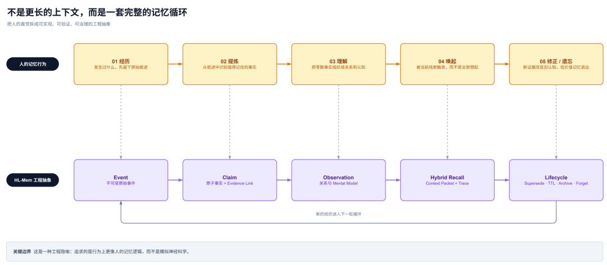
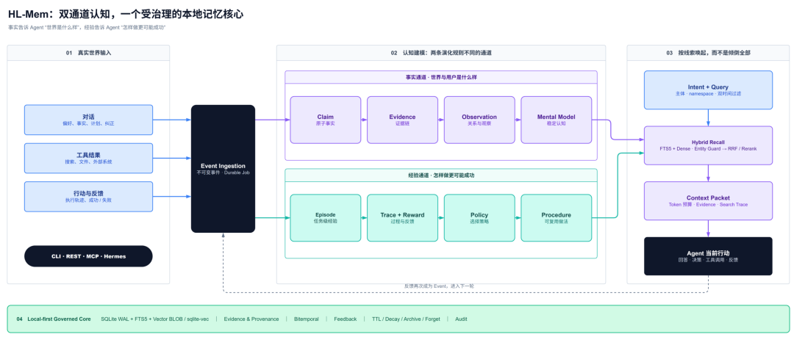
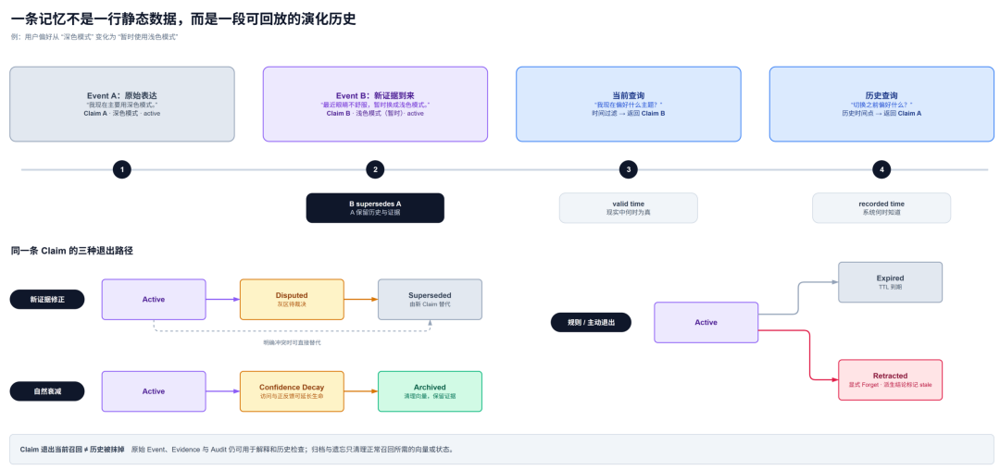
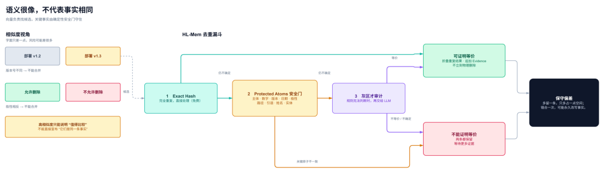
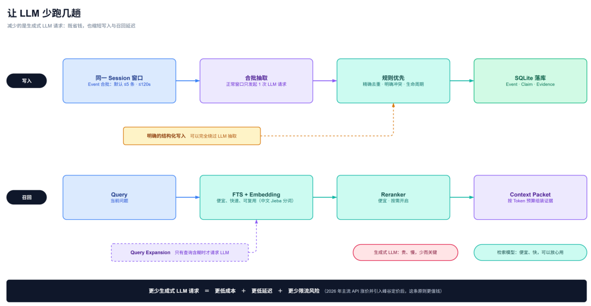
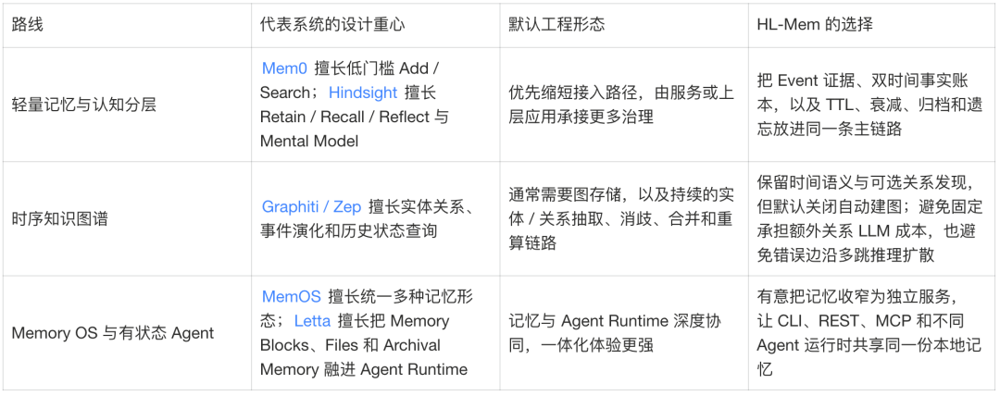
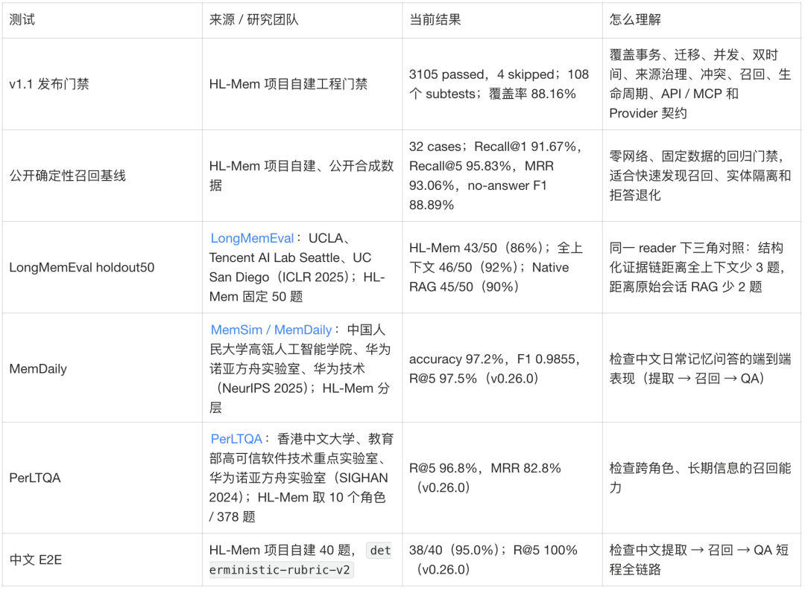
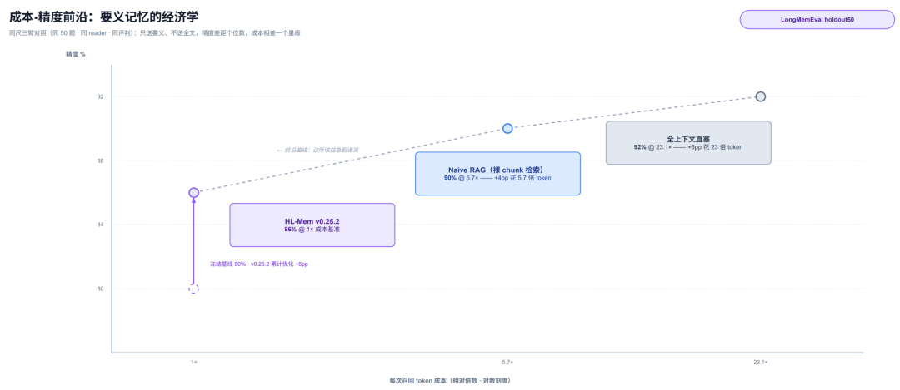

让Agent像人一样记忆：本地长期记忆系统HL-Mem的设计与取舍
来源：微信公众号 归档日期：2026-09-11 抓取状态：成功 原文字符：15487｜配图：12 张
摘要速览
- 介绍 HL-Mem：一套借鉴认知科学的本地长期记忆系统。
- 核心架构：事实（Claim）与经验（Event）双通道。
- 强调记忆治理：去重、冲突消解、生命周期管理。
核心内容
HL-Mem 旨在解决 Agent 跨会话的长期记忆问题。它不只是简单的向量存储，而是引入了“治理”层：
- 双通道架构：保留不可变的原始事件（Event）作为证据，同时维护可更新的结构化事实（Claim）。
- 时间维度：区分“有效时间”和“记录时间”，支持记忆的动态修正。
- 本地优先：默认基于 SQLite 单文件部署，确保隐私和低成本。
- 异步治理：通过后台 Worker 处理复杂的去重和冲突消解。
可执行启发
- 在构建个人 Agent 时，优先考虑本地化、可控的记忆方案。
- 实现记忆的“遗忘”机制，避免过时信息干扰决策。
- 借鉴“事实+经验”的双通道设计，提高记忆的准确性和可追溯性。
归属：[[02-输入/按主题/AI与效率/_index|AI与效率]]
我的想法
（待补充）
原文沉淀
目录
- 从一个故事开始
- 先看一个看似简单的问题
- 长上下文为什么治不了失忆
- 人类记忆的设计智慧：
- 设计原点：
- 整体架构：双通道认知，
- ▐ 为什么没有变成复杂部署
- 一条记忆怎样度过一生
- 五个关键设计取舍
- ▐ 先保存“案发现场”，再允许系统形成看法
- ▐ 一句“我改主意了”，背后其实有两个时钟
- ▐ 相似度 0.99 的两句话，可能差一个事故
- ▐ 我把遗忘当成新陈代谢，而不是一个 Delete API
- ▐ 让 LLM 少跑几趟，让中文当一等公民
- 和其他记忆系统相比：
- 跑出来的效果：
- 边界决定了 HL-Mem 更擅长什么
- 尾声：记忆给 Agent 的，其实是时间
- 附录：项目与参考资料
- 团队介绍
- ¤ 拓展阅读 ¤

HL-Mem 是一套旨在让 Agent 像人一样具备长期记忆能力的本地化记忆系统，其核心设计理念是将记忆视为受治理的认知系统而非简单的数据存储。该系统借鉴认知科学原理，采用事实与经验双通道架构，通过保留不可变的原始事件（Event）和可更新的结构化事实（Claim），实现了证据可追溯、时间可解释（区分有效时间与记录时间）以及记忆的动态修正与遗忘。在工程实现上，HL-Mem 坚持运行时独立和本地优先原则，默认仅依赖 SQLite 单文件部署，通过后台异步 Worker 处理去重、冲突消解和生命周期管理，有效平衡了记忆治理的完整性与部署复杂度，为个人 Agent 提供了低成本、高可控且支持中文环境的长期记忆基础设施。

从一个故事开始
一句话介绍：HL-Mem 把长期记忆看作一套受治理的认知系统：它保留经历和证据，理解事实在时间中的变化，允许新信息修正旧认知，也允许低价值记忆逐渐退出。更重要的是，这些设计被落实成一套运行时独立、来源可控、成本可观测的工程系统；SQLite 单文件只是降低默认部署门槛的实现手段，而不是设计价值本身。
版本坐标：本文对应 HL-Mem v1.1 系列。
1953 年，一位代号 H.M. 的病人为了治疗癫痫切除了海马体。手术很成功，但留下一个意外后果：他的智力、语言、性格全部正常，却永远无法形成新的长期记忆——每天醒来，护士都是陌生人，报纸上的新闻永远新鲜。他成了认知科学史上被研究最多的人，也留下了一个结论：没有长期记忆，再聪明的大脑也只能活在当下。
今天的 LLM 就是数字版的 H.M.：单轮对话里聪明得惊人，会话一关，一切归零。我花了几周时间做了一个开源的 Agent 记忆系统 HL-Mem（Apache-2.0），设计目标只有一句话——让 Agent 像人一样记忆：记得住、想得起、忘得掉、能改口、有依据。这篇分享讲讲我在这个过程中学到的东西：记忆系统到底是什么、人类记忆里藏着哪些精妙的设计、以及把它们翻译成工程时做了哪些取舍。
很多记忆系统分别解决了“存下来”“搜出来”或“形成关系”。HL-Mem 补的是中间断开的链路：原始事件怎样变成事实，事实怎样被新证据修正，旧记忆怎样退出召回。工程上，这套闭环默认只需要一个 SQLite 文件和一个后台 Worker。
先看一个看似简单的问题
用户先说：
“我现在主要用深色模式。”
过了一段时间，他又说：
“最近眼睛不舒服，暂时换成浅色模式。”
然后问 Agent：“我现在偏好什么界面主题？”
如果系统只做向量检索，两句话都可能被召回；如果只看相似度，旧偏好甚至可能排在前面。要真正答对这个问题，系统还得能回答另外四个：
- 哪句话是原始证据？
- 哪个偏好在现在有效？
- 如果追问“之前呢”，还能不能还原历史？
- 新信息为什么替代旧信息，能不能解释？
这四个问题，检索都不负责回答。这就是记忆系统要干的活。
长上下文为什么治不了失忆
一个自然的反驳是：现在模型都有 1M 上下文了，把全部历史塞进去不就行了？这里有一个关键区分——长上下文解决的是“这一次请求能带多少材料”，长期记忆解决的是“跨越很多次交互之后，什么值得留下、怎样更新、何时再想起来”。两者不是同一个问题：
第一，装得下不等于用得好。LongMemEval（ICLR 2025）系统性地测过：长上下文 LLM 在持续交互记忆任务上有明显的精度衰减——lost in the middle、新旧信息互相干扰（深色和浅色两个版本以同等权重摆在模型面前）、跨会话聚合失败。第二，真实的长期记忆是无界的：一个 Agent 陪你工作几个月，历史是百万级 token，任何窗口都装不下，检索永远是必选项。
那检索（RAG）为什么也不够？因为 RAG 的数据是静态文档，而记忆的数据是活的——会重复（同一件事用户说了八遍）、会矛盾（上个月喜欢的这个月不喜欢了）、会过期（“明天开会”三天后就是垃圾）、会被要求删除（“忘了我刚才说的”）。记忆系统的本质，是在检索之上加一层治理：去重、冲突消解、生命周期、可追溯。
归纳起来，一个可持续的个人 Agent 至少需要五种能力：
- 经历：保留发生过的原始事件，而不是只留下模型总结。
- 提炼：把一段对话拆成可判断、可更新的原子事实。
- 理解：从多条事实中形成观察、关系和更稳定的心智模型。
- 唤起：根据当前问题、主体、时间和上下文预算找回合适记忆。
- 修正与遗忘：新证据可以替代旧认知；低价值记忆会衰减、归档，显式遗忘能够真正退出正常召回。
这个赛道上已有几条成熟路线：Mem0 代表轻量提取式记忆，Zep / Graphiti 深耕时间知识图谱，Letta / MemGPT 把记忆直接融进 Agent Runtime。HL-Mem 选择的是另一组组合：完整记忆治理 × 证据与时间可解释 × 运行时独立 × 中文可用。难点不在任何一项单独成立，而在四项走同一条默认路径：证据、时间和生命周期留在记忆层，Agent Runtime 可以更换，中文检索不走降级路径。本地优先和 SQLite 单文件只负责把部署门槛压低。

人类记忆的设计智慧：
我从认知科学里抄的作业
做这个系统最大的收获，是认真读了一遍认知科学对人类记忆的研究——然后发现人脑早就把记忆系统的每个难题都解过一遍，工程上照着抄就行。先声明一句：这里的“像人一样”只是一种工程抽象，我想复现的是人的记忆行为，不做神经系统仿真。挑几个有意思的讲。
- 人从不逐字记忆：gist 与 verbatim 双痕迹。
认知心理学的 fuzzy-trace theory 发现，人类记忆分两套痕迹：逐字痕迹（verbatim）和要义痕迹（gist）。逐字痕迹几小时就衰减殆尽，长期留下的全是要义——你记得朋友“推荐过一家很辣的川菜馆”，但复述不出他的原话。放弃逐字复读听起来是缺陷，实际是交换：正因为存的是结构化的要义，人才能比较（这和他上次说的矛盾吗）、更新（他改口了）、泛化（他喜欢辣）。HL-Mem 照抄：LLM 把对话事件提取成结构化的 Claim（主体 / 谓词 / 值 / 时间 / 重要性），原始对话作为不可变的 Event 归档。要义用来思考，原文用来举证。
- 海马体是个挑剔的编辑，不是录音机。
按认知科学对“心理学现在”约 3 秒的估算（出自 Kahneman），人一天清醒着要经历约两万个瞬间，其中能进入长期记忆的只是极少数——选择性编码发生在写入时。什么都记的系统，最后什么都想不起来。对应设计是 AdmissionPolicy 准入规则：一条信息值不值得记，先过一道确定性判断（有没有信息量、能不能被未来引用、是不是一次性的操作噪声），不够格的直接不入库。
- 遗忘是免疫系统，不是故障。
艾宾浩斯遗忘曲线常被误读为大脑的缺陷，认知科学的主流观点恰恰相反：遗忘是主动的信息治理——不被使用的记忆自然衰减，为高价值记忆腾出检索带宽。有一种罕见的超忆症患者什么都忘不掉，他们的生活被无关细节淹没，痛苦远大于便利。对应的工程设计——TTL、衰减、归档与显式遗忘——放在第七节细讲。
- 改口不删历史：再巩固与双重时间感。
人能优雅地处理“我以前以为 A，现在知道是 B”——旧版本留有痕迹但不再被引用。同时人还有两个时钟：“事情什么时候发生”和“我什么时候知道的”是两条独立的时间轴。这对应 HL-Mem 的 supersede 链与双时间模型，第六节会用一个例子演示。
- 睡眠中的整理工。
记忆的整洁靠的是睡眠中的巩固：白天快速记录，夜里海马体把碎片回放给皮层，归并、抽象、清理。对应设计是后台 Worker 维护循环——去重收敛、冲突归并、TTL 清理、归档，全部异步执行，不阻塞白天的读写。
- 记住事实，也要记住它从哪里来：源记忆错误。
人类记忆有个著名弱点：记得一件事，却记错了从哪听来的。机器没理由继承这个缺陷，所以 HL-Mem 给每条 Claim 挂了完整的证据链，recall 的每条结果都能一路追溯到当初那句原话。证据链是机器记忆少数可以天然做得比人更好的地方。
设计原点：
把“经历”与“认知”分开
把作业抄到工程里，第一刀落在数据结构上。HL-Mem 最核心的设计，是一条可追溯的事实链：
Event（经历） → Claim（原子事实） → Observation（观察） → Mental Model（心智模型）
- Event 是不可变的原始事件，例如一轮对话、一次工具结果或一次操作。
- Claim 是从 Event 中提取出的最小事实单元，例如“用户当前偏好浅色模式”。
- Evidence Link 把 Claim 指回原始 Event；模型生成的文字本身不能充当事实来源。
- Observation / Mental Model 是更高层理解，但始终保留来源关系；底层事实失效时，派生理解会被标记为需要重新计算。
这样做看起来比“存一段摘要”麻烦，但它换来了三件重要的事：可验证、可更新、可解释。
与此同时，HL-Mem 没有把“世界事实”和“做事经验”揉成一个大表。它还有一条经验通道：
Event（经历） → Episode（任务级经验） → Trace / Reward（过程与反馈） → Policy（策略） → Procedure / Skill（可复用做法）
- Event 仍是不可变的原始事件；行动型 Event 可以记录任务目标、工具结果、操作反馈等现场信息。
- Episode 把围绕同一目标的一组 Event 组织成一次任务级经验，回答“这次要做什么、实际发生了什么、结果怎样”。
- Trace / Reward 分别保存执行轨迹与结果反馈，让成功、失败和代价都有可复盘的信号。
- Policy 表示从经验中形成的选择策略，回答“在什么情况下，优先采用哪种做法”。
- Procedure / Skill 把稳定有效的做法沉淀成可重复执行的步骤或能力，供后续任务直接复用。
两条通道共享 Event 起点，却按不同规则演化。Episode / Trace 保留独立写入接口，过程记录不必等待事实抽取。
事实会被新证据纠正，经验会被反馈强化或淘汰。把两者都压成同一种“记忆文本”，系统既解释不了为什么相信一件事，也解释不了为什么选择一种做法。一条维护认知，一条积累经验。
整体架构：双通道认知，
一个受治理的记忆核心

一句话读法：事件从接入层进入，沿事实与经验双通道演化，最终由同一个治理核心约束。展开成五层：
- 接入层：CLI、REST API、MCP 与 Hermes Provider 接口，让不同 Agent 运行时使用同一套记忆。
- 写入层：事实型输入先成为不可变 Event，再通过可持久化 Job 进入抽取、准入、去重、冲突和证据提交流程；行动型 Event 则可以及时组织成 Episode / Trace，不必等待事实抽取完成。关键状态按事务提交，失败可以重试，不会提前发布“已经记住”的成功状态——对应“编码与筛选”。
- 认知层：事实通道从 Event 形成 Claim、Observation、Mental Model；经验通道从 Event 聚合 Episode，再形成 Trace、Policy 和 Procedure。两条通道共享证据与时间底座，按各自规则演化。
- 召回层：先理解问题所指的主体、实体和时间，再融合中文 FTS 与向量候选；高置信实体约束用于隔离同名或相似对象，新近度、重要性与反馈效用参与排序，最后组装成有 Token 预算的 Context Packet——对应“线索联想”。
- 治理层：来源准入、反馈、TTL、衰减、归档、纠正、遗忘、解释与运行统计共同维护记忆质量；后台 Worker 扮演“睡眠”，
hl-mem explain和hl-mem ops report则让记忆为什么形成、模型调用花了多少成本都可以被看见。
底层默认只依赖 SQLite WAL + FTS5 + 向量 BLOB。小规模数据可以直接精确扫描向量，数据增大时可选 sqlite-vec。模型层既能连接百炼 / DashScope、智谱和 OpenAI-compatible 接口，也能通过显式 allowlist 加载外部 Provider 插件；基础数据面始终不依赖外部向量库或图数据库。
▐ 为什么没有变成复杂部署
证据链、双时间和生命周期增加的是数据语义，不必同时增加三套外部基础设施。
SQLite 负责权威存储，确定性规则先处理可以证明的事实，LLM 只做语言理解，后台 Worker 承担抽取与维护，Provider 边界统一预算、失败和审计。复杂度没有消失，而是被关进了明确边界：在线召回不等待维护任务，基础数据面不依赖外部向量库或图数据库。
一条记忆怎样度过一生
回到开头那个深色模式的例子，把管线串起来走一遍：
- “主要用深色模式”先被保存为不可变 Event A，同时记录“用户直述、交互会话”的来源坐标，并提取出 Claim A。
- “暂时换成浅色模式”成为 Event B，提取出带时间和“暂时”限定词的 Claim B。
- 系统判断二者指向同一事实槽位但取值冲突，于是让 B supersede A，同时保留 A 的历史与证据。
- 问“现在偏好什么”时，当前时间过滤只返回 B；问“之前偏好什么”时，历史查询仍能找到 A。
- 如果用户显式遗忘 B，对应记忆对象、向量和专属依赖会按删除闭环清理，相关派生理解随之失效；tombstone 账本继续阻止旧备份把它重新带回系统。

这里有一个容易被忽略的细节：HL-Mem 同时记录两种时间。
- valid time：这件事在现实中什么时候为真？
- recorded time：系统在什么时候知道并记录了它？
比如用户 3 月说“我在杭州工作”，8 月才说“其实 5 月就搬去北京了”——系统既能回答“你 4 月时以为我在哪”（杭州，当时的认知），也能回答“我 4 月实际在哪”（北京，事后修正的事实）。单时间戳的系统只能留一个值，这类问题必然答错。这对迟到数据、纠正、审计和历史回放都很重要——它让记忆不再只是一张当前状态表，而变成了一段可以回放的认知历史。
一条记忆从出生、被修正、到体面退场，每一步都有据可查——这就是“治理”两个字的具体含义。
五个关键设计取舍
功能清单到此为止。这一节换个讲法：五个真实的设计取舍。它们几乎都来自同一个问题：如果这条记忆错了、旧了、重复了，或者太贵了，系统准备怎么办？
▐ 先保存“案发现场”，再允许系统形成看法
我给 HL-Mem 立的第一条硬规则是：Event 不可修改，Claim 只是系统对 Event 的解读。
例如用户说“最近眼睛不舒服，暂时换成浅色模式”，原话会作为 Event 留下来；“用户当前暂时偏好浅色模式”是抽取出的 Claim。抽取器可以升级，Prompt 可以变化，Claim 也可能被纠正，但原始 Event 不会跟着改写。
这样做很像保留案卷：即使系统后来理解错了，我仍然能回答“它当时到底听到了什么”“哪一步把原话解释错了”。这条约束让任何记忆错误都可诊断、可修复——就像经历本身不可篡改，可变的只是记忆对它的诠释。
v1.1 又把“案卷从哪里来”纳入准入规则。Event 会携带 origin_class 与 session_kind：用户直接表达、外部网页、cron 任务、heartbeat 或 subagent 会话可以被保存，但不再默认拥有同样的事实权威。在 provenance.mode = "enforce" 下，系统会在调用模型之前拦住不适合自动形成 Claim 的来源。这组字段直接把提示词注入、外部噪声和系统自说自话挡在长期认知之外；hl-mem explain claim <id> 则把结论、原始证据、来源坐标和演化关系直接展开。
至于“存要义还是存原文”，第三节那笔 fuzzy-trace 交换已经给出答案：存原文在逐字复述问题上占优，但重复难以判定、矛盾难以检测、生命周期也难以管理；我选择要义化换取可治理，再用原始 Event 和证据链兜底。要义管理解，原文管举证，来源决定权威。
▐ 一句“我改主意了”，背后其实有两个时钟
很多记忆系统遇到新事实时，会直接覆盖旧值。但对长期 Agent 来说，“旧值不再有效”和“旧值从未存在”完全是两回事。
所以我没有把纠正设计成一条简单的 UPDATE，而是让新 Claim 通过 supersede 链替代旧 Claim：旧 Claim 退出当前召回，却仍能在历史查询和审计里出现。配合 valid time / recorded time 两个时钟（第六节的杭州 / 北京例子演示的正是这一对），系统不仅能回答“现在是什么”，还能回答“站在当时，系统知道什么”。
▐ 相似度 0.99 的两句话，可能差一个事故
“部署 v1.2”和“部署 v1.3”只差一个字符；“允许删除”和“不允许删除”也高度相似。对向量检索来说它们几乎一样，对执行任务来说却可能是完全相反的指令。
所以 HL-Mem 的去重没有停在一个 cosine threshold。我把它做成了一个漏斗：精确哈希先处理完全重复；确定性安全门继续检查主体、数字、版本、日期、路径、极性、引语、姓名和实体等 protected atoms，关键原子必须全部一致才可能合并；只有规则无法判断的灰区，才允许进入 LLM 审计。
同样的约束也延伸到了召回。语义相似回答“像不像”，实体约束回答“是不是在说这个对象”。当查询中出现高置信实体时，默认的 entity_constraint_mode = "enforce" 会隔离其他实体的相似记忆。在 v1.1 的冻结门禁中，15 个高置信实体案例全部进入 Top-5，跨实体错误 Top-1 从 15 个降到 0。这个结果说明，提升召回质量并不总要换一个更大的模型；把对象边界设计清楚，往往更直接。
即使两条 Claim 很像，只要关键限定词不能证明一致，系统就宁可都保留。确认等价后，也优先追加 Evidence 或在召回阶段折叠，而不是立刻物理删除。这里我选择的是一种很保守的偏差：多留一条重复记忆通常只是浪费一点空间，错误合并却可能永久改写事实。

▐ 我把遗忘当成新陈代谢，而不是一个 Delete API
写到生命周期时，我越来越确定：会删除数据不等于会遗忘。真正的遗忘应该回答“什么先忘、什么时候忘、重新用到后会不会更耐久、忘掉后派生结论怎么办”。
HL-Mem 把“忘”拆成了三层，一层比一层彻底：
- 自然衰减：根据 scope 与 importance 计算 TTL；长期没被使用的 Claim，激活度（activation）按半衰期衰减，访问和正向反馈会延长有效生命。衰减只影响“多容易被想起”，不改写事实本身的置信度。
- 归档（archived）：继续沉寂的记忆退出普通召回、清理向量，但事实和证据仍留在历史中，随时可以查证。
- 显式遗忘（Forget）：用户主动要求忘记时，系统沿依赖关系执行物理删除闭环，清理对应记忆对象与向量，并让派生理解失效；tombstone 账本继续阻止备份恢复或历史重放让旧记忆复活。
这套一键级联的显式遗忘，在裸 RAG 里很难补齐，在被遗忘权与本地隐私场景里却是硬需求。它也体现了 HL-Mem 的一个基本态度：用户的数据控制权不能只停留在“以后不召回”，还要落实到存储和恢复链路。
设计这套逻辑并非为了画出一条漂亮的“遗忘曲线”，它直接保护检索带宽。一个什么都不忘的 Agent，最后会被旧偏好、一次性计划和无关细节填满。遗忘在这里承担的是记忆质量控制。
▐ 让 LLM 少跑几趟，让中文当一等公民
我从一开始就不想让“记一次东西”触发一串看不见的昂贵调用。正常对话里，同一 Session 的 Event 会形成有界窗口，默认最多 5 条、最长等待 120 秒，然后用一次结构化抽取理解这一小段上下文；超长内容才继续分块。显式写入的结构化记忆甚至可以绕过 LLM 抽取。
后面的去重、冲突和维护同样是确定性规则优先。关系发现默认关闭，主链路不会为了构建图谱再请求一次实体 / 边关系 LLM。图谱并不是免费的索引：随着实体、候选关系和更新频率增加，抽取、消歧、合并与重算成本会组合式膨胀；更危险的是，一条错误关系会沿多跳检索和派生推理继续扩散，形成连锁污染。HL-Mem 因此把关系写入视为高风险变更：默认不建图，候选关系需要显式开启和审核，正式边保留来源闭环。召回先使用中文 FTS5、Embedding 与 RRF，Reranker 按需开启。LLM 只处理真正需要语言理解的少数环节，其余工作交给规则、索引、向量和轻量排序模型。
v1.1 把这笔账进一步变成了可治理的工程能力。Provider 通过稳定插件契约接入，必须经过显式 allowlist，未启用时不会被导入；主程序统一管理传输、调用记录和使用量。hl-mem ops report 可以汇总调用量、Token、费用、延迟、失败率，发送前保守预留预算、完成后按实际使用结算，无法可靠定价时选择 fail-closed。“让 LLM 少跑”因此不再是一句优化原则，而是一条能观测、能预算、能回归的运行约束。

中文这边：中文没有天然分词，通用 FTS 对中文近乎失效。HL-Mem 用 Jieba 领域词典做预分词全文索引，原文不翻译，提取语义中英双语对齐；模型层兼容百炼 / DashScope、智谱和 OpenAI-compatible 接口，也已经有独立的 DashScope 参考插件覆盖 LLM、Embedding 与 Reranker。没有戏剧性的算法突破，更多是分词、Provider、配置和默认值上的工程耐心——也正是这些琐碎工作，决定中文用户能不能把系统真正用起来。
和其他记忆系统相比：
不同路线，不同工程代价
第二节提过赛道上的几家玩家。这里不按功能逐项判输赢，而是看它们各自优先解决什么问题，又接受了什么默认工程代价。

Mem0 先解决低门槛个性化记忆；Graphiti / Zep 先解决关系推理；Letta 先解决有状态 Agent。HL-Mem 选择把四件事绑在同一条主链路：记忆能追溯来源，能回放历史，能按生命周期退出，又不依赖某个 Agent Runtime；中文检索走默认路径。
这组组合也解释了它的工程取向。Agent 框架还在快速变化，记忆却是最需要长期保存的数据；把记忆独立于 Runtime，可以降低迁移成本。关系推理很有价值，但不是每次个人偏好召回都值得启动图存储与额外抽取；把它放在证据约束和显式开关之后，不只降低成本，也缩小错误关系的污染半径。来源、预算和解释能力看似属于运维，却直接决定系统能否放心地持续记忆。
这就是 HL-Mem 的取舍：认知模型可以向前走，默认依赖和运行成本必须收得住。
跑出来的效果：
理念没有停在结构图里
先把当前成绩放在这里。表里的数字分成三层：发布门禁回答工程实现是否稳定，确定性基线回答关键召回行为能否重复，真实模型 Benchmark 回答整条链路最终表现如何。

三千余项发布门禁检查工程实现，公开确定性基线负责低成本召回回归，三套外部 Benchmark 提供横向坐标，中文 E2E 守住实际主链路。它们回答的不是同一个问题，也不能互相替代。
其中我最看重 LongMemEval 的不是 86% 本身，而是旁边两个对照：全上下文可以直接看到全部历史，Native RAG 可以从原始会话中检索；HL-Mem 则先把历史整理成可更新、可追溯的 Claim 与 Evidence。最终只相差 3 题和 2 题，说明证据、时间与生命周期治理没有换来不可接受的信息损失。
另一边，结构化记忆把抽取成本放在写入阶段，后续每轮只携带当前问题真正需要的事实和证据。下面这张图记录的是 holdout50 实验中的成本—效果关系，重点在于一次整理、多次复用：Agent 使用得越久，反复携带全部历史的成本越高，结构化记忆的复用价值越明显。

评测口径和可复现入口见仓库的：
evaluation/results/README.md。
MemDaily、PerLTQA 和中文 E2E 主要验证短程的提取—召回—问答链路；改口、双时间和显式遗忘等长期治理能力，目前主要由确定性门禁覆盖。
LongMemEval 只跑 50 题也有一个很现实的原因：每题都要摄入几十轮历史会话，再完成抽取、Embedding、去重、召回、reader 和 judge，Prompt 一改就要整轮重跑。个人项目为爱发电，评测烧的不是榜，是余额。
边界决定了 HL-Mem 更擅长什么
更适合：
- 本地个人 Agent、桌面助手，以及中文知识与偏好记忆。
- 需要追问记忆来源、处理事实修正与历史回放，或执行用户遗忘请求的场景。
- 希望记忆独立于 Agent Runtime，先低成本落地、再随规模增强的团队。
不应该被误解为：
- 面向不可信多租户的完整 RBAC 或托管平台；namespace 目前提供的是逻辑分区。
- 默认开启的大规模图推理系统；关系发现只在需要时显式开启。
- 一次性自动运行所有“类大脑”能力；Observation、Mental Model、Policy 和 Procedure 会按真实使用证据逐步开放。
这些边界换来的不是功能少，而是故障半径小：高成本、高不确定性的能力必须显式开启；证据、时间、生命周期和数据主权始终留在默认主链路。
v1.1 把这条边界固定成一套可运行的基线：来源有准入，记忆可解释，Provider 可替换，模型费用可统计，核心召回有冻结门禁。下一轮功能先看真实 Agent 工作流里哪里反复失败，再决定加什么。
尾声：记忆给 Agent 的，其实是时间
最后聊点大的。
现在谈 AGI，最常被押注的几条路：把模型做得更大（scaling）、把推理做得更深（test-time compute）、把上下文拉得更长、让 Agent 在环路里自主行动（agentic loop）。这几条路走到深处会撞上同一堵墙：智能需要时间维度上的连续性。一个每次醒来都失忆的系统，参数再多也只是一个聪明的陌生人——它无法从自己的错误里学习，无法积累对你的理解，无法形成“它自己”。
认知科学里有个说法：自我就是记忆的叙事——“我是谁”是用一段段记忆串起来的连续故事。回到开头那位切掉海马体的病人 H.M.：手术后他又活了五十多年，却记不住其中任何一天，晚年照镜子仍会被自己的白发吓到——在他自己的故事里，他永远是 1953 年那个 27 岁的年轻人。他失去的远不止记忆，还有继续成为自己的能力。对 Agent 同理：推理能力（LLM）解决的是“此刻多聪明”，工具调用解决的是“能做什么”，而记忆解决的是“它是谁”——偏好的积累、错误的修正、经验的沉淀、承诺的延续，全部长在记忆上。
但连续性也不等于把一切永久保存。没有证据的记忆会制造幻觉，不会更新的记忆会固守旧认知，什么都不忘的记忆最终会淹没在自己积累的噪声里。一个长期存在的 Agent，需要的不只是“记住”，还要能选择、解释、修正和遗忘。所以我猜，通往 AGI 的路上，记忆不会是一个插件，而会是一层基础设施——就像人脑里海马体不是皮层的可选配件。它要能选择性地记、带出处地想、有尊严地忘、诚实地改口。这些能力今天看是工程特性，往远看，是一个智能体拥有“生平”的前提。
我把 HL-Mem 看成一次很具体的尝试：让 Agent 拥有一个可以追溯的过去、一个允许改口的现在，以及一个能够持续积累经验的未来。做 HL-Mem 教会我的最重要的一课，也是这篇分享最想留给你的一句话：
人类记忆的伟大之处从来不在于存得多，而在于忘得聪明、改得干净、想起来的时候还能说出为什么。模型赋予 Agent 智力，工具赋予 Agent 双手，记忆才让它在时间里成为同一个自己。
附录：项目与参考资料
项目
- 代码仓库：github.com/lohr13/hl_mem
（Apache-2.0；pip install hl-mem 即可安装）
- 架构设计：docs/architecture.md · 核心策略 ADR：docs/adr/0001-core-strategy.md · 能力矩阵：docs/capability-matrix.md
- 评测口径与复现说明：evaluation/README.md
认知科学参考
- H.M. 病例：Scoville & Milner (1957), Loss of Recent Memory after Bilateral Hippocampal Lesions
- 双痕迹理论（fuzzy-trace theory）：Brainerd & Reyna，gist / verbatim 双记忆痕迹模型
- “心理学现在”约 3 秒、一天约两万个心理瞬间：Kahneman (2010), TED, The Riddle of Experience vs. Memory
- 遗忘曲线：Ebbinghaus (1885), Über das Gedächtnis；超忆症个案：Parker, Cahill & McGaugh (2006), A Case of Unusual Autobiographical Remembering
- 记忆再巩固：Nader, Schafe & Le Doux (2000), Nature
- 源记忆错误：Johnson, Hashtroudi & Lindsay (1993), Source Monitoring, Psychological Bulletin
技术参考与同类系统
- LongMemEval（长期交互记忆基准，ICLR 2025）：arXiv:2410.10813
- Lost in the Middle（长上下文中段失效）：arXiv:2307.03172
- Mem0：github.com/mem0ai/mem0 · Zep / Graphiti：github.com/getzep/graphiti · Letta (MemGPT)：github.com/letta-ai/letta
- Hindsight Memory API：hindsight.vectorize.io · MemOS：memos-docs.openmem.net
- 中文评测数据集：MemDaily / MemSim（NeurIPS 2025）：arXiv:2409.20163 · PerLTQA：arXiv:2402.16288
团队介绍
本文作者子安，来自淘天集团-直播AIGC团队，作为直播电商智能化领域的先行者，始终致力于通过AI原生技术创新重构电商直播场景中的人货场交互范式。团队基于对大语言模型研发、多模态语义理解、语音合成、数字人形象建模、AI工程化部署及音视频处理技术的深厚沉淀和积累，已搭建起覆盖直播全链路的AI技术矩阵。自主研发的数字人直播解决方案通过商业化验证，成功实现从技术研发到商业变现的完整闭环，累计服务上千家商家。
¤ 拓展阅读 ¤
3DXR技术 | 终端技术 | 音视频技术
服务端技术 | 技术质量 | 数据算法
归属：[[02-输入/按主题/AI与效率/_index|AI与效率]]